Overview
Beyond the main analysis pipeline, irtQ includes a set of utility functions for simulating item response data, computing information and characteristic functions, supporting numerical integration over the ability scale, and computing asymptotic standard errors of item parameter estimates.
| Function | Purpose |
|---|---|
simdat() |
Simulate IRT item response data |
drm() |
Compute correct-response probabilities for dichotomous items (1PLM / 2PLM / 3PLM) |
prm() |
Compute category response probabilities for polytomous items (GRM / GPCM) |
info() |
Item and test information functions (IIF / TIF) |
traceline() |
Item and test characteristic curves (ICC / TCC) |
lwrc() |
Lord–Wingersky recursion: conditional summed-score distributions |
gen.weight() |
Generate quadrature nodes and weights from a distribution |
covirt() |
Analytical asymptotic variance-covariance matrices of item parameter estimates |
Throughout this vignette we reuse two item metadata objects defined below.
# 15-item binary test (3PLM)
meta_bin <- shape_df(
par.drm = list(
a = c(1.0, 1.2, 0.8, 1.4, 0.9, 1.1, 1.3, 0.7, 1.0, 1.2,
0.9, 1.1, 1.4, 0.85, 1.0),
b = c(-2.0, -1.5, -1.0, -0.5, -0.1, 0.2, 0.6, 0.9, 1.2, 1.6,
-0.8, -0.3, 0.5, 1.0, 1.8),
g = rep(0.15, 15)
),
item.id = paste0("I", 1:15),
cats = 2,
model = "3PLM"
)
# Mixed-format test: 5 dichotomous (3PLM) + 3 polytomous (GRM, 4 categories)
meta_mix <- shape_df(
par.drm = list(
a = c(1.0, 1.2, 0.9, 1.1, 0.8),
b = c(-1.0, -0.3, 0.3, 0.8, 1.4),
g = rep(0.15, 5)
),
par.prm = list(
a = c(1.5, 1.2, 1.0),
d = list(
c(-1.5, -0.2, 1.0),
c(-1.2, 0.1, 1.3),
c(-0.9, 0.4, 1.6)
)
),
item.id = c(paste0("DRM", 1:5), paste0("GRM", 1:3)),
cats = c(rep(2, 5), rep(4, 3)),
model = c(rep("3PLM", 5), rep("GRM", 3))
)
# Common theta grid used by info(), traceline(), and lwrc()
theta_grid <- seq(-4, 4, by = 0.1)
simdat() — Simulate Item Response Data
simdat() generates item response matrices from known IRT
parameters. It is the primary tool for producing synthetic data for
testing and demonstration. It supports 1PLM, 2PLM, and 3PLM for
dichotomous items and GRM and GPCM for polytomous items, including
mixed-format tests.
Two usage modes:
-
Via item metadata (
xargument): pass ashape_df()data frame — the simplest and recommended approach. -
Via raw parameter vectors (
a.drm,b.drm,g.drm,a.prm,d.prm,cats,pr.model): useful when the metadata object has not yet been created, or when parameters come directly from external sources.
Mode 1: Via item metadata (x argument)
Binary test
# 500 examinees drawn from N(0, 1)
theta_bin <- rnorm(500, mean = 0, sd = 1)
# Simulate via item metadata (x argument)
resp_bin <- simdat(x = meta_bin, theta = theta_bin, D = 1.702)
dim(resp_bin) # rows = examinees, columns = items
#> [1] 500 15
head(resp_bin[, 1:8]) # first 8 items, first 6 examinees
#> [,1] [,2] [,3] [,4] [,5] [,6] [,7] [,8]
#> [1,] 1 1 0 1 1 1 0 0
#> [2,] 1 1 1 0 0 1 0 0
#> [3,] 1 1 1 1 1 0 0 0
#> [4,] 1 1 1 1 1 1 0 1
#> [5,] 1 1 0 1 1 0 0 0
#> [6,] 0 0 1 1 0 0 0 0
colMeans(resp_bin) # item p-values (proportion correct)
#> [1] 0.938 0.896 0.764 0.738 0.592 0.572 0.440 0.408 0.356 0.264 0.774 0.648
#> [13] 0.436 0.370 0.230Mixed-format test
For a mixed-format test, polytomous responses are integers from
0 to
,
where
is the number of score categories for item
.
theta_mix <- rnorm(400, mean = 0, sd = 1)
resp_mix <- simdat(x = meta_mix, theta = theta_mix, D = 1.702)
dim(resp_mix)
#> [1] 400 8
head(resp_mix) # dichotomous (0/1) and polytomous (0–3) responses
#> [,1] [,2] [,3] [,4] [,5] [,6] [,7] [,8]
#> [1,] 0 1 1 1 1 3 2 3
#> [2,] 1 0 1 0 0 2 1 1
#> [3,] 1 1 0 0 0 1 1 1
#> [4,] 0 1 1 0 0 1 1 0
#> [5,] 1 1 1 0 0 2 1 3
#> [6,] 1 1 1 0 1 3 3 3Mode 2: Via raw parameter vectors (without x)
When a metadata data frame is not available, item parameters can be
passed directly via dedicated arguments. cats must always
be specified (2 per dichotomous item,
per polytomous item), and pr.model must be supplied for any
polytomous items.
Binary-only test
For a purely dichotomous test, only a.drm,
b.drm, cats (all 2), and optionally
g.drm are needed. Omitting g.drm corresponds
to 1PLM or 2PLM.
theta_raw <- rnorm(300, mean = 0, sd = 1)
# 2PLM: no guessing parameter (g.drm omitted)
resp_2pl <- simdat(
theta = theta_raw,
a.drm = c(0.9, 1.2, 1.5, 0.8, 1.1),
b.drm = c(-1.5, -0.5, 0.0, 0.8, 1.5),
cats = rep(2, 5), # all dichotomous
D = 1.702
)
dim(resp_2pl)
#> [1] 300 5
colMeans(resp_2pl)
#> [1] 0.8266667 0.6633333 0.5133333 0.3000000 0.1800000
# 3PLM: with guessing parameter
resp_3pl <- simdat(
theta = theta_raw,
a.drm = c(0.9, 1.2, 1.5, 0.8, 1.1),
b.drm = c(-1.5, -0.5, 0.0, 0.8, 1.5),
g.drm = rep(0.15, 5),
cats = rep(2, 5),
D = 1.702
)
colMeans(resp_3pl) # p-values are slightly higher due to guessing
#> [1] 0.8900000 0.6800000 0.5633333 0.3766667 0.3000000Mixed-format test
When mixing dichotomous and polytomous items, cats must
encode the correct category count for all items in
order, and pr.model covers only the
polytomous items in the same order.
# Test structure (5 items): DRM1, DRM2, GRM (4 cats), DRM3, GPCM (3 cats)
resp_mix_raw <- simdat(
theta = theta_raw,
a.drm = c(1.0, 1.2, 0.9), # slopes for the 3 DRM items
b.drm = c(-1.0, 0.0, 1.0), # difficulties for the 3 DRM items
g.drm = rep(0.15, 3),
a.prm = c(1.4, 1.1), # slopes for the 2 polytomous items
d.prm = list(
c(-1.2, -0.1, 1.0), # 3 threshold params → 4 categories (GRM)
c(-0.8, 0.6) # 2 threshold params → 3 categories (GPCM)
),
cats = c(2, 2, 4, 2, 3), # item order: DRM, DRM, GRM, DRM, GPCM
pr.model = c("GRM", "GPCM"), # models for polytomous items only
D = 1.702
)
dim(resp_mix_raw)
#> [1] 300 5
head(resp_mix_raw) # columns 3 and 5 are polytomous (0–3 and 0–2)
#> [,1] [,2] [,3] [,4] [,5]
#> [1,] 1 1 3 1 2
#> [2,] 1 1 2 1 2
#> [3,] 1 0 1 1 2
#> [4,] 1 1 1 0 1
#> [5,] 1 1 3 1 2
#> [6,] 1 0 1 0 1Key simdat() arguments
| Argument | Description |
|---|---|
x |
Item metadata from shape_df() — use this when
available |
theta |
Vector of true ability values |
D |
Scaling constant |
a.drm |
Discrimination parameters for dichotomous items (required when
x = NULL) |
b.drm |
Difficulty parameters for dichotomous items (required when
x = NULL) |
g.drm |
Guessing parameters; omit for 1PLM/2PLM, use NA for
mixed 1/2/3PLM tests |
a.prm |
Discrimination parameters for polytomous items |
d.prm |
List of threshold parameter vectors, one element per polytomous item |
cats |
Number of score categories per item (2 for dichotomous); required
when x = NULL
|
pr.model |
IRT model per polytomous item: "GRM" or
"GPCM"
|
Note on the D constant: The scaling
constant D is used to make the logistic function closely
approximate the normal ogive function. It is crucial to use the exact
same D value (commonly 1.702 or
1.0) that was utilized during the item parameter
calibration phase to avoid any scaling mismatch in the simulated
responses or probability computations.
drm() and prm() — Item Response
Probability Functions
drm() and prm() are the low-level
probability engines underlying simdat(),
traceline(), info(), and the internal
estimation routines. They compute item response probabilities directly
from IRT parameters and are useful whenever you need category
probabilities at a specific set of theta values without constructing a
full item metadata frame.
drm() — Dichotomous Response Model
drm() computes
,
the probability of a correct response, for one or more dichotomous items
under the 1PLM, 2PLM, or 3PLM:
where
is discrimination,
is difficulty,
is the guessing parameter (pseudo-chance level), and
is the scaling constant. Setting
gives the 2PLM; additionally fixing
to be equal across items gives the 1PLM.
The function returns a matrix with rows = theta values and columns = items.
theta_pts <- c(-2, -1, 0, 1, 2)
# 2PLM (g omitted → defaults to 0): two items
P_2pl <- drm(
theta = theta_pts,
a = c(1.0, 1.5),
b = c(-0.5, 0.5),
D = 1.702
)
P_2pl # rows = theta, columns = items
#> [,1] [,2]
#> [1,] 0.0722252 0.001688036
#> [2,] 0.2992231 0.021258724
#> [3,] 0.7007769 0.218146590
#> [4,] 0.9277748 0.781853410
#> [5,] 0.9860055 0.978741276
# 3PLM: three items with guessing
P_3pl <- drm(
theta = theta_pts,
a = c(0.9, 1.2, 1.5),
b = c(-1.0, 0.0, 1.0),
g = c(0.10, 0.15, 0.20),
D = 1.702
)
round(P_3pl, 4)
#> [,1] [,2] [,3]
#> [1,] 0.2600 0.1641 0.2004
#> [2,] 0.5500 0.2476 0.2048
#> [3,] 0.8400 0.5750 0.2578
#> [4,] 0.9598 0.9024 0.6000
#> [5,] 0.9910 0.9859 0.9422A useful check: for any 3PLM item, .
# Verify: P at theta = b equals (1 + g) / 2
P_at_b <- drm(theta = 0.0, a = 1.2, b = 0.0, g = 0.15, D = 1.702)
cat("P(theta=b):", round(as.numeric(P_at_b), 6),
" Expected:", (1 + 0.15) / 2, "\n")
#> P(theta=b): 0.575 Expected: 0.575
prm() — Polytomous Response Model
prm() computes category response probabilities for a
single polytomous item under the GRM or GPCM. It
returns a matrix with rows = theta values and columns =
score categories (0, 1, …,
),
and the rows always sum to 1.
The d argument contains
threshold parameters for a
-category
item:
-
GRM:
dholds the difficulty thresholds at which . The categories are ordered so that higher theta values yield higher expected scores. -
GPCM:
dholds the threshold parameters expressed as the item location minus the step parameter for each category boundary. The first threshold is fixed at 0 internally, so provide values.
# GRM: 4-category item (d has K-1 = 3 thresholds)
P_grm <- prm(
theta = theta_pts,
a = 1.5,
d = c(-1.5, -0.2, 1.0), # 3 thresholds → 4 categories
D = 1.702,
pr.model = "GRM"
)
round(P_grm, 4) # 5 rows (theta) × 4 columns (score categories)
#> [,1] [,2] [,3] [,4]
#> [1,] 0.7819 0.2081 0.0095 0.0005
#> [2,] 0.2181 0.6670 0.1088 0.0060
#> [3,] 0.0213 0.3538 0.5527 0.0722
#> [4,] 0.0017 0.0429 0.4554 0.5000
#> [5,] 0.0001 0.0035 0.0686 0.9278
rowSums(P_grm) # should all equal 1
#> [1] 1 1 1 1 1
# GPCM: 4-category item (same parameter count as GRM)
P_gpcm <- prm(
theta = theta_pts,
a = 1.5,
d = c(-1.5, -0.2, 1.0),
D = 1.702,
pr.model = "GPCM"
)
round(P_gpcm, 4)
#> [,1] [,2] [,3] [,4]
#> [1,] 0.7801 0.2177 0.0022 0.0000
#> [2,] 0.1979 0.7095 0.0920 0.0006
#> [3,] 0.0077 0.3549 0.5914 0.0460
#> [4,] 0.0000 0.0228 0.4886 0.4886
#> [5,] 0.0000 0.0003 0.0722 0.9275
rowSums(P_gpcm) # should all equal 1
#> [1] 1 1 1 1 1The GRM and GPCM use the same parameter names but produce different probability profiles. The GRM is appropriate when the response categories are ordered by increasing difficulty thresholds; the GPCM allows more flexible step structures.
# Side-by-side at theta = 0
cat("GRM category probs at theta=0:\n")
#> GRM category probs at theta=0:
round(prm(0, a=1.5, d=c(-1.5,-0.2,1.0), D=1.702, pr.model="GRM"), 4)
#> [,1] [,2] [,3] [,4]
#> [1,] 0.0213 0.3538 0.5527 0.0722
cat("GPCM category probs at theta=0:\n")
#> GPCM category probs at theta=0:
round(prm(0, a=1.5, d=c(-1.5,-0.2,1.0), D=1.702, pr.model="GPCM"), 4)
#> [,1] [,2] [,3] [,4]
#> [1,] 0.0077 0.3549 0.5914 0.046For the PCM (a special case of GPCM with equal discrimination across
items), set a = 1.
Key drm() and prm() arguments
| Argument | drm() |
prm() |
Description |
|---|---|---|---|
theta |
✓ | ✓ | Numeric vector of ability values |
a |
✓ | ✓ | Discrimination (slope) parameter(s) |
b |
✓ | Difficulty parameter(s) — dichotomous items only | |
g |
✓ | Guessing parameter(s); omit for 1PLM/2PLM (defaults to 0) | |
d |
✓ | Vector of threshold parameters — polytomous items only | |
D |
✓ | ✓ | Scaling constant (typically 1.702) |
pr.model |
✓ |
"GRM" or "GPCM"
|
info() — Item and Test Information Functions
info() computes the item information function (IIF) and
test information function (TIF) at specified ability values. The TIF is
the sum of all IIFs and is the reciprocal of the squared conditional
standard error of estimation:
.
The function returns an object of class "info" with
three components:
-
$iif: matrix of item information values (rows = items, columns = theta points), -
$tif: numeric vector of TIF values at each theta point, -
$theta: the theta grid supplied by the user.
The plot() method visualises IIFs, TIF, or the
conditional standard error of estimation (CSEE =
).
info_val <- info(
x = meta_bin,
theta = theta_grid,
D = 1.702,
tif = TRUE # include TIF in output (default)
)
names(info_val)
#> [1] "iif" "tif" "theta"
head(info_val$tif) # TIF at first few theta points
#> [1] 0.01818914 0.02441289 0.03260200 0.04329184 0.05712434 0.07485327
info_val$iif[1:5, 1:6] # IIF: items 1–5, theta points 1–6
#> theta.1 theta.2 theta.3 theta.4 theta.5
#> I1 1.390716e-02 1.868643e-02 2.493571e-02 3.301905e-02 4.334884e-02
#> I2 8.244131e-04 1.226185e-03 1.819214e-03 2.690947e-03 3.966036e-03
#> I3 2.586706e-03 3.331019e-03 4.278533e-03 5.479868e-03 6.996195e-03
#> I4 1.831244e-06 2.947625e-06 4.743874e-06 7.633293e-06 1.227966e-05
#> I5 8.418859e-05 1.139572e-04 1.541615e-04 2.084084e-04 2.815224e-04
#> theta.6
#> I1 5.637295e-02
#> I2 5.820088e-03
#> I3 8.900581e-03
#> I4 1.974826e-05
#> I5 3.799404e-04Plot: Test Information Function (TIF)
plot(
x = info_val,
item.loc = NULL, # NULL → plot the TIF
main.text = "Test Information Function (15-item 3PLM)",
xlab = expression(theta),
ylab = "Information"
)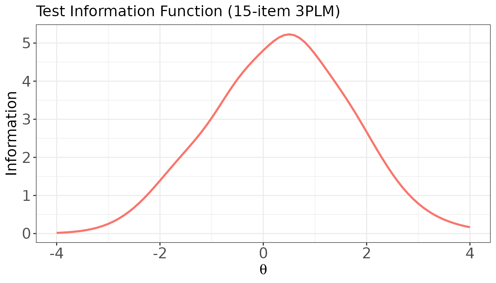
Plot: Conditional Standard Error of Estimation (CSEE)
plot(
x = info_val,
item.loc = NULL,
csee = TRUE, # plot SE(θ) = 1 / √TIF(θ)
main.text = "Conditional Standard Error of Estimation",
xlab = expression(theta),
ylab = expression(SE(theta))
)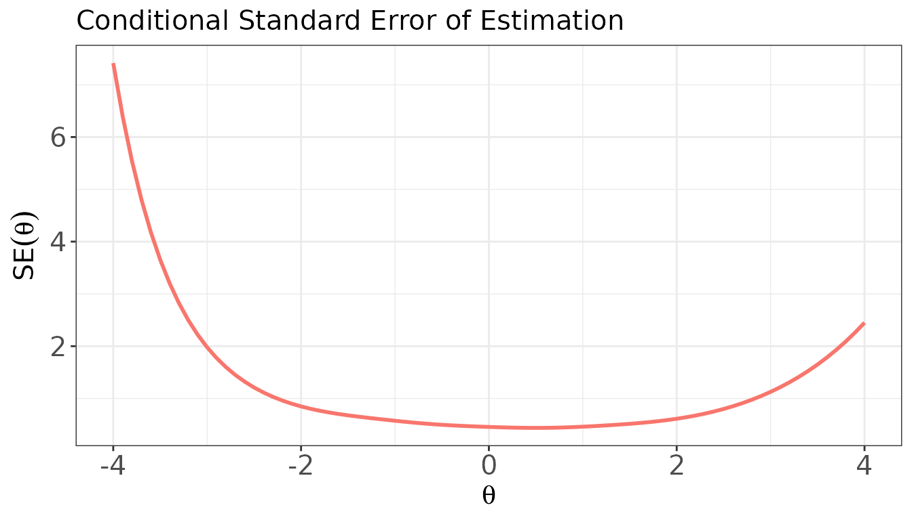
Plot: IIF for a single item
plot(
x = info_val,
item.loc = 1, # item position (1-indexed)
main.text = "IIF for Item 1 (3PLM)",
xlab = expression(theta),
ylab = "Information"
)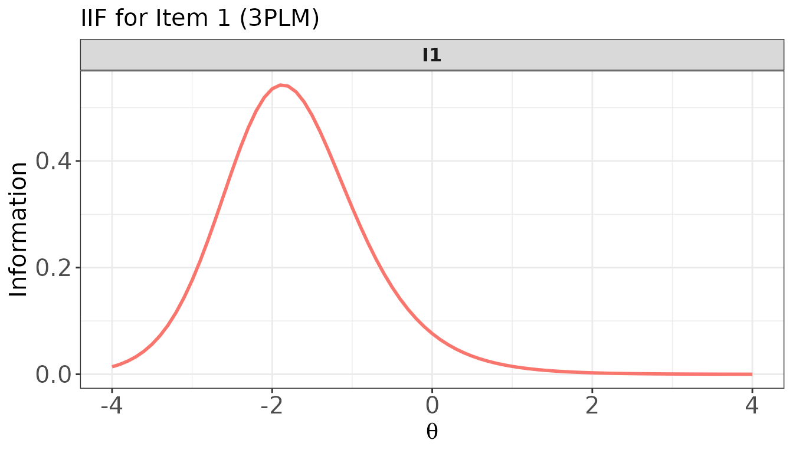
Plot: IIFs for multiple items — overlaid and in panels
# Overlaid in one panel
plot(
x = info_val,
item.loc = 1:5,
overlap = TRUE,
main.text = "IIFs for Items 1–5 (overlaid)"
)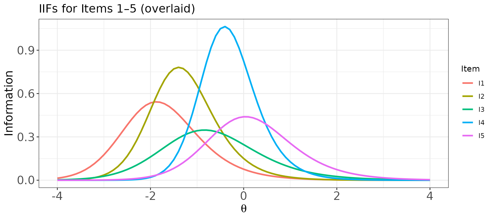
# One panel per item
plot(
x = info_val,
item.loc = 1:5,
overlap = FALSE,
layout.col = 5,
main.text = "IIFs for Items 1–5 (separate panels)"
)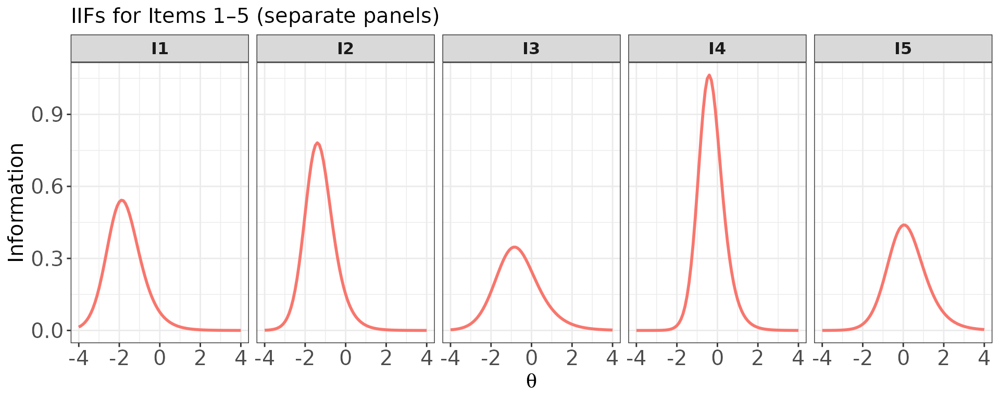
Mixed-format test
info() handles polytomous items transparently. The IIF
for a polytomous item reflects the information contributed by the full
graded response structure, and tends to be broader and higher than a
comparable dichotomous item because the multiple ordered categories each
contribute information.
info_mix <- info(x = meta_mix, theta = theta_grid, D = 1.702, tif = TRUE)
# TIF for the mixed-format test
plot(
x = info_mix,
item.loc = NULL,
main.text = "TIF: Mixed-Format Test (5 DRM + 3 GRM)"
)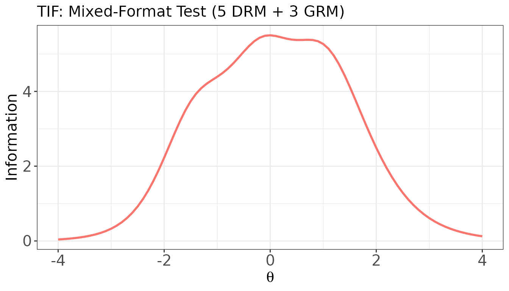
IIF for a single polytomous item
Items 6–8 in meta_mix are the three GRM items. Their
IIFs tend to be broader than those of dichotomous items.
# IIF for GRM item 1 (item 6 in meta_mix)
plot(
x = info_mix,
item.loc = 6,
main.text = "IIF for GRM Item 1 (item 6)",
xlab = expression(theta),
ylab = "Information"
)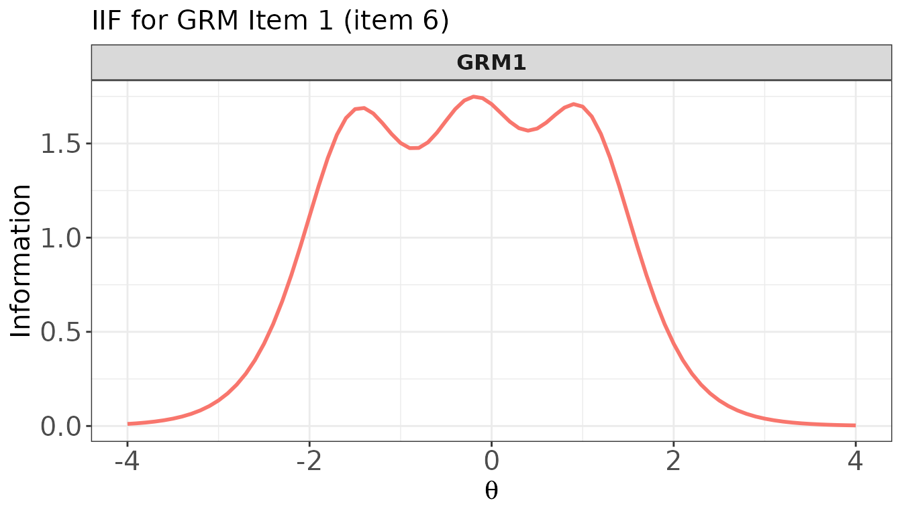
IIFs for multiple items — mixed dichotomous and polytomous
# Overlaid: compare DRM items vs. GRM items
plot(
x = info_mix,
item.loc = c(1, 3, 5, 6, 7, 8), # 3 DRM + 3 GRM
overlap = TRUE,
main.text = "IIFs: DRM Items (1,3,5) vs. GRM Items (6,7,8) — overlaid"
)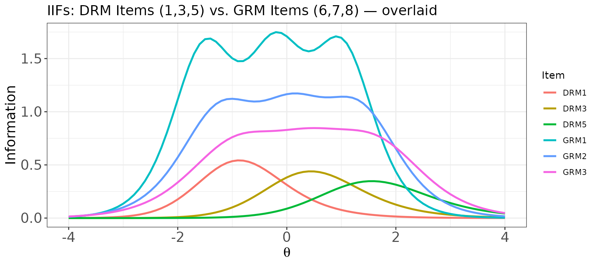
# Separate panels for the same set of items
plot(
x = info_mix,
item.loc = c(1, 3, 5, 6, 7, 8),
overlap = FALSE,
layout.col = 3,
main.text = "IIFs: DRM Items (1,3,5) and GRM Items (6,7,8)"
)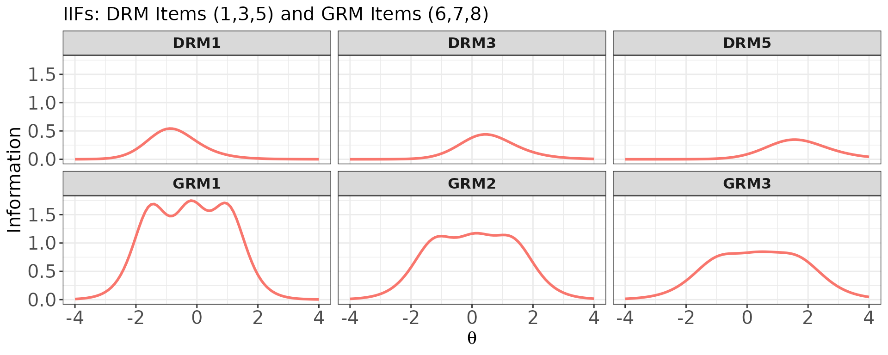
traceline() — Item and Test Characteristic Curves
traceline() computes the item characteristic curve
(ICC), test characteristic curve (TCC), and category response
probabilities for each item over a specified ability grid.
The function returns an object of class "traceline" with
four components:
-
$prob.cats: a named list of data frames, one per item, containing category response probabilities (columnsresp.0,resp.1, …) at each theta value, -
$icc: matrix of expected item scores (rows = theta, columns = items), -
$tcc: numeric vector of expected total (summed) scores at each theta, -
$theta: the theta grid supplied by the user.
For dichotomous items, the ICC equals , the probability of a correct response. For polytomous items, the ICC is the expected item score .
The plot() method is used for visualisation. Two key
arguments control what is drawn:
-
item.loc: which item(s) to plot;NULLplots the TCC for the whole test. -
score.curve:FALSE(default) draws category response probability curves;TRUEdraws the expected item score curve (a single curve per item).
Note that when score.curve = FALSE and
overlap = FALSE, only a single item can be
specified in item.loc (one panel per score category). To
plot multiple items simultaneously with
score.curve = FALSE, set overlap = TRUE (one
panel per item, categories overlaid within each panel).
trace_bin <- traceline(x = meta_bin, theta = theta_grid, D = 1.702)
names(trace_bin)
#> [1] "prob.cats" "icc" "tcc" "theta"
head(trace_bin$tcc) # TCC: expected summed score at each theta
#> [1] 2.309632 2.319809 2.331709 2.345610 2.361831 2.380734
trace_bin$icc[1:6, 1:5] # ICC: expected item scores, items 1–5
#> I1 I2 I3 I4 I5
#> [1,] 0.1773451 0.1551202 0.1640658 0.1502029 0.1521569
#> [2,] 0.1822264 0.1562718 0.1660788 0.1502575 0.1525129
#> [3,] 0.1879388 0.1576802 0.1683734 0.1503268 0.1529274
#> [4,] 0.1946087 0.1594012 0.1709873 0.1504147 0.1534101
#> [5,] 0.2023755 0.1615026 0.1739623 0.1505262 0.1539719
#> [6,] 0.2113914 0.1640658 0.1773451 0.1506677 0.1546258Plot: Test Characteristic Curve (TCC)
plot(
x = trace_bin,
item.loc = NULL, # NULL → plot TCC
main.text = "Test Characteristic Curve (15-item 3PLM)",
xlab = expression(theta),
ylab = "Expected Total Score"
)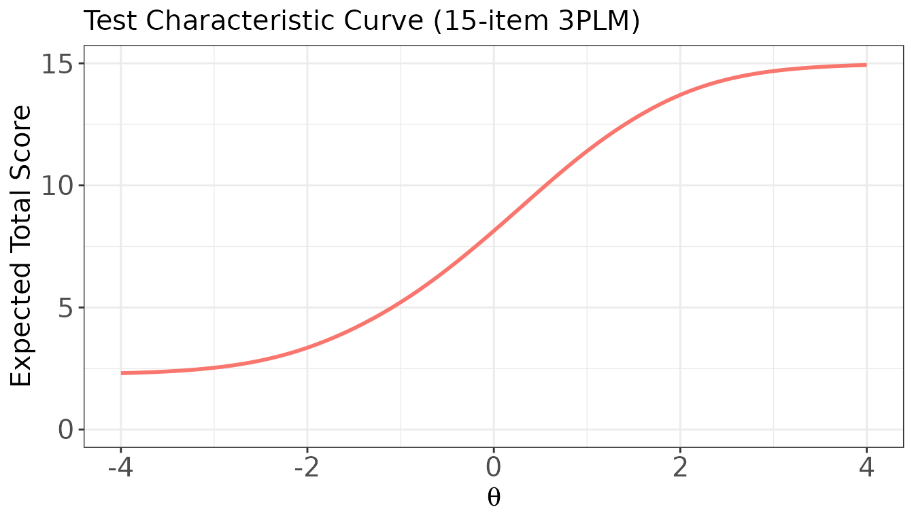
Plot: ICCs for a dichotomous item
For a 3PLM item, score.curve = FALSE draws two panels —
one for each score category (0 = incorrect, 1 = correct);
score.curve = TRUE shows only
(the probability of a correct response) as a single curve.
# score.curve = FALSE: separate panels for Score 0 and Score 1
plot(
x = trace_bin,
item.loc = 2,
score.curve = FALSE,
layout.col = 2,
main.text = "ICCs for Item 2 (3PLM) — by category"
)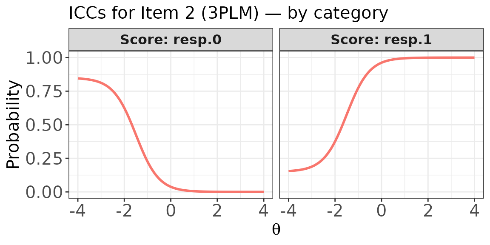
# score.curve = TRUE: single item score curve (= P(correct) for binary items)
plot(
x = trace_bin,
item.loc = 2,
score.curve = TRUE,
main.text = "Item Score Curve: Item 2 (3PLM)",
xlab = expression(theta),
ylab = "P(Correct)"
)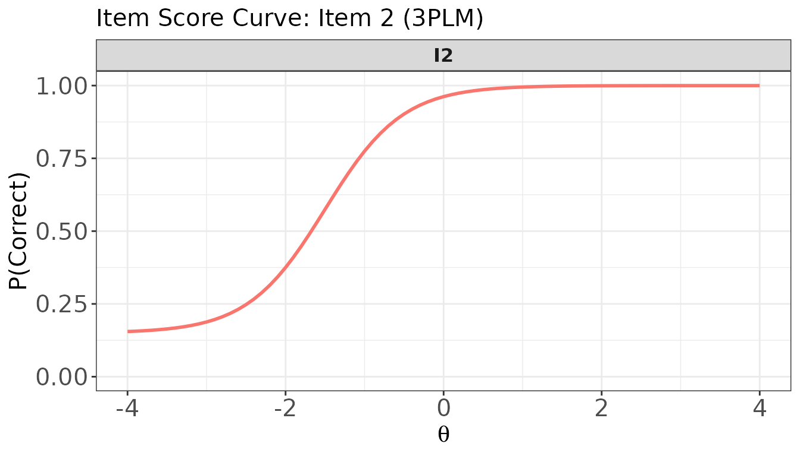
Plot: Item score curves for multiple dichotomous items
# Overlaid in one panel: all five items in a single plot
plot(
x = trace_bin,
item.loc = 1:5,
score.curve = TRUE,
overlap = TRUE,
main.text = "Item Score Curves: Items 1–5 (overlaid)"
)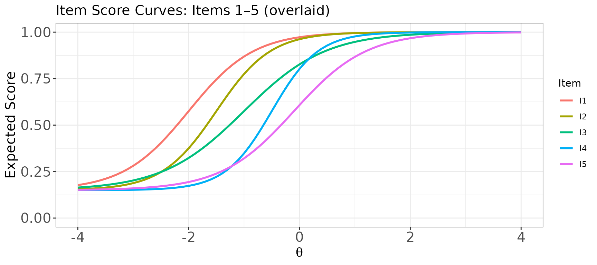
# One panel per item (separate panels)
plot(
x = trace_bin,
item.loc = 1:5,
score.curve = TRUE,
overlap = FALSE,
layout.col = 5,
main.text = "Item Score Curves: Items 1–5 (separate panels)"
)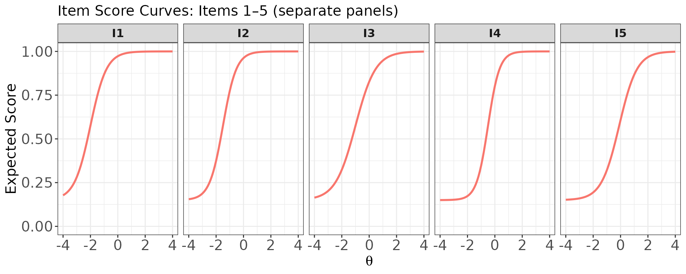
Plot: Category response curves and expected score curve for a polytomous item
For a GRM item, score.curve = FALSE draws one curve per
score category (0, 1, 2, 3). Items 6–8 in meta_mix are the
three GRM items.
trace_mix <- traceline(x = meta_mix, theta = theta_grid, D = 1.702)
# Category response curves for GRM item 1 (item 6 overall), separate panels
plot(
x = trace_mix,
item.loc = 6,
score.curve = FALSE,
overlap = FALSE,
layout.col = 2,
main.text = "Category Response Curves: GRM Item 1 (4 categories)"
)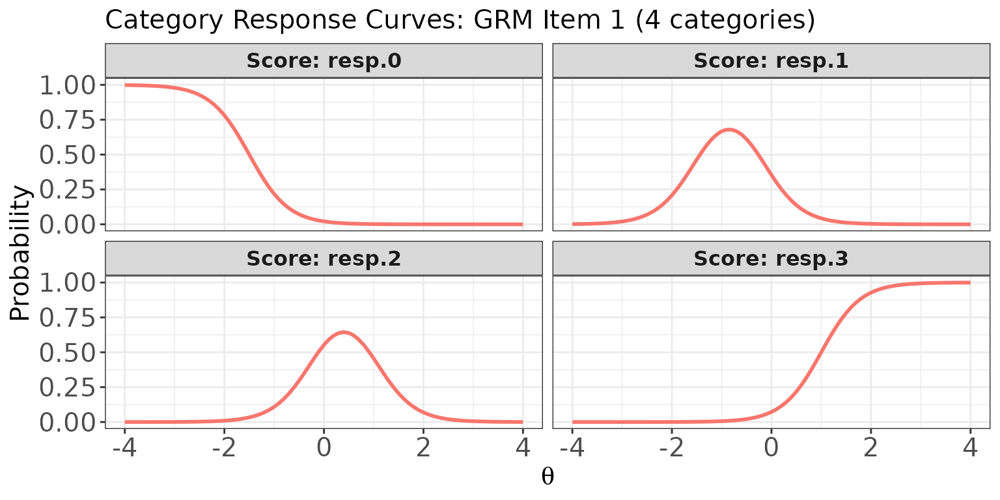
# Same curves overlaid in one panel
plot(
x = trace_mix,
item.loc = 6,
score.curve = FALSE,
overlap = TRUE,
main.text = "Category Response Curves (Overlaid): GRM Item 1"
)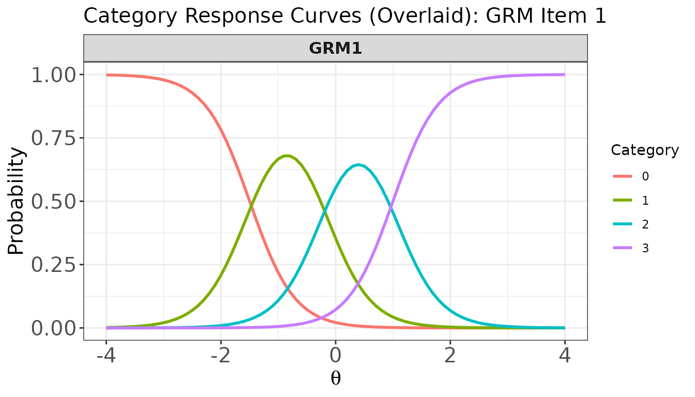
# Expected item score curve for GRM item 1
plot(
x = trace_mix,
item.loc = 6,
score.curve = TRUE,
main.text = "Expected Item Score Curve: GRM Item 1",
ylab.text = "Expected Score"
)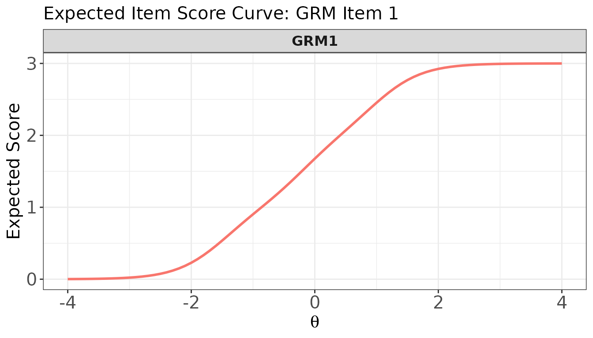
Plot: Item score curves for multiple items — mixed dichotomous and polytomous
When score.curve = TRUE, items of any format can be
plotted together because all ICCs are expressed on the same
expected-score metric.
# Overlaid: DRM items (1–3) and GRM items (6–8) in one panel
plot(
x = trace_mix,
item.loc = c(1, 2, 3, 6, 7, 8),
score.curve = TRUE,
overlap = TRUE,
main.text = "Item Score Curves: DRM (1–3) and GRM (6–8) — overlaid"
)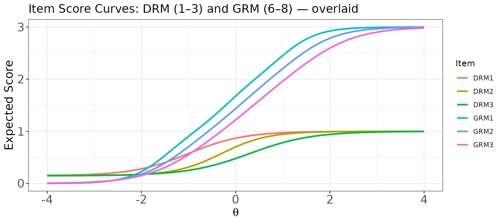
# One panel per item (separate panels)
plot(
x = trace_mix,
item.loc = c(1, 2, 3, 6, 7, 8),
score.curve = TRUE,
overlap = FALSE,
layout.col = 3,
main.text = "Item Score Curves: DRM (1–3) and GRM (6–8)"
)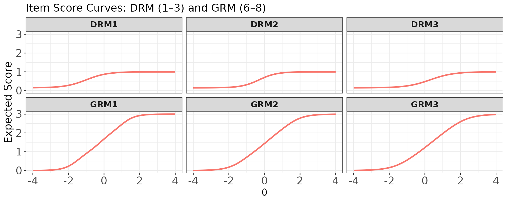
Plot: Category response curves for multiple polytomous items (overlaid per item)
When score.curve = FALSE and
overlap = TRUE, each item gets its own panel and the
category curves within that item are overlaid using different
colours.
# One panel per GRM item (6, 7, 8), with all category curves overlaid within each panel
plot(
x = trace_mix,
item.loc = 6:8,
score.curve = FALSE,
overlap = TRUE,
layout.col = 3,
main.text = "Category Response Curves: GRM Items 1–3 (overlaid by category)"
)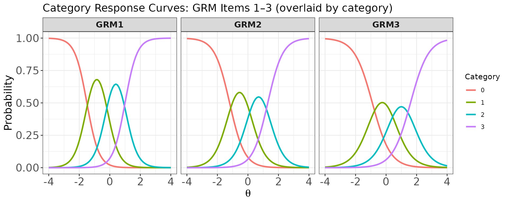
lwrc() — Lord–Wingersky Recursion
lwrc() implements the Lord–Wingersky recursive algorithm
(Lord and Wingersky 1984; Kolen and Brennan
2004), which computes the conditional distribution of the
observed summed score given
:
This distribution is the foundation of IRT-based score equating and
is used internally by sx2_fit(), cac_lee(),
and est_score() (EAP summed-score method). For tests with
polytomous items, the algorithm generalizes straightforwardly to ordered
response categories.
The function supports two input modes:
-
xargument (item metadata): computes the conditional distribution at each specifiedthetavalue; returns a matrix with rows = summed scores () and columns = theta levels. -
probargument (x = NULL): the user provides a category probability matrix already evaluated at a particular theta (or a single marginal weight), together with acatsvector; returns a named vector of summed-score probabilities. This is useful when category probabilities come from an external source or when computing the marginal distribution at a single fixed ability level.
Mode 1: Using item metadata (x argument)
# Conditional summed-score distribution at three ability levels
lwrc_val <- lwrc(
x = meta_bin,
theta = c(-1, 0, 1),
D = 1.702
)
dim(lwrc_val) # (J+1) rows × length(theta) columns: 16 × 3
#> [1] 16 3
round(head(lwrc_val), 4)
#> theta.1 theta.2 theta.3
#> score.0 0.0004 0.0000 0
#> score.1 0.0055 0.0000 0
#> score.2 0.0333 0.0001 0
#> score.3 0.1039 0.0012 0
#> score.4 0.1960 0.0087 0
#> score.5 0.2428 0.0377 0
# Verify: expected summed scores from lwrc() match the TCC from traceline()
score_axis <- 0:(nrow(lwrc_val) - 1)
colSums(lwrc_val * score_axis)
#> theta.1 theta.2 theta.3
#> 5.212989 8.137061 11.405212
# Cross-check with TCC from traceline()
tcc_check <- traceline(x = meta_bin, theta = c(-1, 0, 1), D = 1.702)$tcc
round(tcc_check, 6)
#> [1] 5.212989 8.137061 11.405212The two results agree, confirming that the expected summed score
derived from lwrc() matches the TCC value at the same
ability level.
Mode 2: Using a category probability matrix
(x = NULL)
When x = NULL, the user supplies prob (rows
= items, columns = score categories) and cats.
Importantly, the columns in the prob matrix
strictly correspond to the ordered score categories (i.e., column 1 is
for score 0, column 2 is for score 1, column 3 is for score 2, and so
forth). Empty cells for items with fewer categories should be
filled with 0 or NA. This mode returns the
marginal score distribution for the single ability
level at which the probabilities were computed.
## Example from Kolen & Brennan (2004, p. 183): 3 dichotomous items at a fixed theta
# Each row is one item; columns are P(score=0) and P(score=1)
probs_3items <- matrix(
c(0.26, 0.74, # item 1: P(0) = 0.26, P(1) = 0.74
0.27, 0.73, # item 2
0.18, 0.82), # item 3
nrow = 3, ncol = 2, byrow = TRUE
)
cats_3items <- c(2, 2, 2)
score_dist <- lwrc(prob = probs_3items, cats = cats_3items)
score_dist # P(X=0), P(X=1), P(X=2), P(X=3)
#> score.0 score.1 score.2 score.3
#> 0.012636 0.127692 0.416708 0.442964
sum(score_dist) # should equal 1
#> [1] 1
## Mixed-format: 2 dichotomous + 1 four-category + 1 three-category item
p1 <- c(0.3, 0.7, NA, NA) # dichotomous: 2 categories (cols: 0, 1)
p2 <- c(0.4, 0.6, NA, NA) # dichotomous: 2 categories (cols: 0, 1)
p3 <- c(0.1, 0.3, 0.4, 0.2) # polytomous: 4 categories (cols: 0, 1, 2, 3)
p4 <- c(0.5, 0.3, 0.2, NA) # polytomous: 3 categories (cols: 0, 1, 2)
prob_mix <- rbind(p1, p2, p3, p4)
cats_mix <- c(2, 2, 4, 3)
score_dist_mix <- lwrc(prob = prob_mix, cats = cats_mix)
score_dist_mix # P(X=0) through P(X=7); max score = 1+1+3+2 = 7
#> score.0 score.1 score.2 score.3 score.4 score.5 score.6 score.7
#> 0.0060 0.0446 0.1410 0.2518 0.2758 0.1868 0.0772 0.0168
sum(score_dist_mix)
#> [1] 1
gen.weight() — Quadrature Weights
gen.weight() generates a two-column data frame of
quadrature nodes and normalised weights to be used in numerical
integration over the ability scale. It is used by
est_score() (EAP), sx2_fit(),
cac_lee(), cac_rud(), and
covirt().
Three distribution options are available via the dist
argument:
-
"norm": normal distribution. Whennis given (notheta), Gaussian quadrature points and weights are computed viastatmod::gauss.quad.prob(). Whenthetais given, weights are proportional to the normal density evaluated at each node. -
"unif": uniform distribution — equally spaced nodes over with equal weights. -
"emp": empirical distribution — equal weights for user-suppliedthetavalues.
The returned data frame always has columns named theta
and weight, and the weights always sum to 1.
# 41 Gaussian quadrature points from N(0, 1) — most common usage
w_norm <- gen.weight(n = 41, dist = "norm", mu = 0, sigma = 1)
head(w_norm)
#> theta weight
#> 1 -11.614937 2.257864e-30
#> 2 -10.647537 8.308559e-26
#> 3 -9.843433 2.746891e-22
#> 4 -9.123070 2.326384e-19
#> 5 -8.456099 7.655982e-17
#> 6 -7.826882 1.220335e-14
sum(w_norm$weight) # always sums to 1
#> [1] 1
# Plot the quadrature approximation
plot(w_norm$weight ~ w_norm$theta,
type = "h", lwd = 2,
xlab = expression(theta), ylab = "Weight",
main = "Gaussian Quadrature Approximation of N(0, 1) — 41 nodes")
# Normal weights on a user-defined evenly spaced grid
w_grid <- gen.weight(dist = "norm", mu = 0, sigma = 1,
theta = seq(-4, 4, by = 0.25))
nrow(w_grid) # 33 nodes
#> [1] 33
sum(w_grid$weight)
#> [1] 1
# Uniform distribution: 21 equally spaced nodes on [-3, 3]
w_unif <- gen.weight(n = 21, dist = "unif", l = -3, u = 3)
head(w_unif)
#> theta weight
#> 1 -3.0 0.04761905
#> 2 -2.7 0.04761905
#> 3 -2.4 0.04761905
#> 4 -2.1 0.04761905
#> 5 -1.8 0.04761905
#> 6 -1.5 0.04761905
# Empirical distribution: equal weights for sample ability estimates
theta_sample <- rnorm(200)
w_emp <- gen.weight(dist = "emp", theta = theta_sample)
nrow(w_emp) # one node per observation
#> [1] 200
sum(w_emp$weight) # sums to 1
#> [1] 1
covirt() — Asymptotic Variance-Covariance Matrices of
Item Parameters
covirt() computes the analytical asymptotic
variance-covariance matrices of item parameter estimates using the
formulas developed by Thissen and Wainer
(1982) and extended to polytomous IRT models by Li and Lissitz (2004). These matrices provide
the asymptotic standard errors (ASEs) of maximum likelihood estimates
without requiring examinee response data — only the
item parameters and the sample size used for calibration are needed.
The ASEs obtained analytically represent lower bounds of the true standard errors (Thissen and Wainer 1982), so they are best used as approximations when empirical standard errors from calibration software are unavailable.
The function returns a named list with two components:
-
$cov: a named list of variance-covariance matrices, one per item, -
$se: a named list of ASE vectors (square roots of diagonal elements of each covariance matrix).
Notes on PCM items: The item metadata uses
"GPCM" to label both the Generalized Partial Credit Model
(GPCM) and the Partial Credit Model (PCM). PCM items (where
discrimination is fixed at 1) require special handling for variance
computation and must be identified via the pcm.loc
argument.
Binary test
# Compute ASEs for the 15-item 3PLM test, assuming n = 1,000
cov_bin <- covirt(
x = meta_bin,
D = 1.702,
nstd = 1000,
norm.prior = c(0, 1),
nquad = 41
)
# Variance-covariance matrix for item 1
cov_bin$cov[["I1"]]
#> par.1 par.2 par.3
#> par.1 0.02493906 0.05851498 0.03474867
#> par.2 0.05851498 0.18920950 0.12973035
#> par.3 0.03474867 0.12973035 0.10032713
# ASEs for all items: each vector holds SE(a), SE(b), SE(c)
do.call(rbind, cov_bin$se)
#> par.1 par.2 par.3
#> I1 0.1579210 0.43498218 0.31674458
#> I2 0.1558743 0.21622062 0.15517626
#> I3 0.1142373 0.29650137 0.14580863
#> I4 0.1468963 0.08788048 0.05281089
#> I5 0.1156423 0.14178645 0.06350700
#> I6 0.1298219 0.09011467 0.04115446
#> I7 0.1558146 0.06697283 0.02764344
#> I8 0.1274625 0.14698758 0.05139614
#> I9 0.1599796 0.09370920 0.02748933
#> I10 0.2191089 0.10119226 0.01961802
#> I11 0.1163729 0.21041422 0.10740235
#> I12 0.1250015 0.11241667 0.05768607
#> I13 0.1604652 0.06244608 0.02725742
#> I14 0.1382020 0.10850329 0.03687232
#> I15 0.2100965 0.13617792 0.02205996Item-specific sample sizes
When items were calibrated on different samples, pass a vector of sample sizes:
# Example: items 1–5 calibrated on n=500, items 6–15 on n=2000
n_vec <- c(rep(500, 5), rep(2000, 10))
cov_bin2 <- covirt(x = meta_bin, D = 1.702, nstd = n_vec,
norm.prior = c(0, 1), nquad = 41)
# Compare SE(b) for item 1 (n=500) vs item 6 (n=2000)
cat("SE(b) for I1 (n=500):", cov_bin2$se[["I1"]][2], "\n")
#> SE(b) for I1 (n=500): 0.6151577
cat("SE(b) for I6 (n=2000):", cov_bin2$se[["I6"]][2], "\n")
#> SE(b) for I6 (n=2000): 0.06372069Mixed-format test
# GRM items in meta_mix: items 6–8 (DRM1–DRM5 come first)
cov_mix <- covirt(
x = meta_mix,
D = 1.702,
nstd = 1500,
norm.prior = c(0, 1),
nquad = 41
)
# ASEs for a GRM item: SE(a), SE(d1), SE(d2), SE(d3)
cov_mix$se[["GRM1"]]
#> par.1 par.2 par.3 par.4
#> 0.04307804 0.03560601 0.02206548 0.02737165Summary
| Function | Input | Key output | Used by |
|---|---|---|---|
simdat() |
Item metadata or raw params + θ | Response matrix | Testing, demos |
drm() |
a, b, g, θ | P(correct) matrix (θ × items) |
simdat(), traceline(),
info(), covirt()
|
prm() |
a, d, θ, model | Category prob. matrix (θ × cats) |
simdat(), traceline(),
info(), covirt()
|
info() |
Item metadata + θ grid | IIF matrix, TIF vector; plot()
|
est_score() |
traceline() |
Item metadata + θ grid | ICC matrix, TCC vector, category probs; plot()
|
Visualisation |
lwrc() |
Item metadata + θ, or prob matrix |
cac_lee(), sx2_fit(),
est_score()
|
|
gen.weight() |
Distribution spec | Node–weight data frame |
cac_lee(), cac_rud(),
est_score(), covirt()
|
covirt() |
Item metadata + sample size | Cov matrices, ASE vectors | SE approximation |